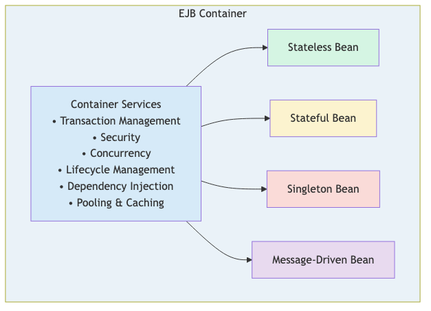
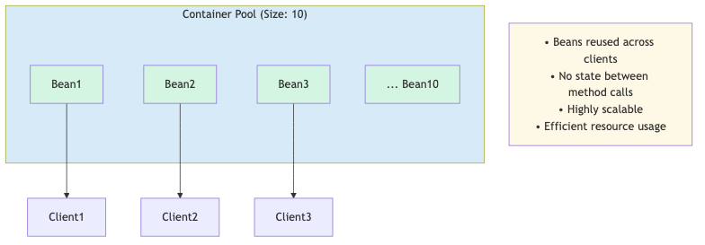
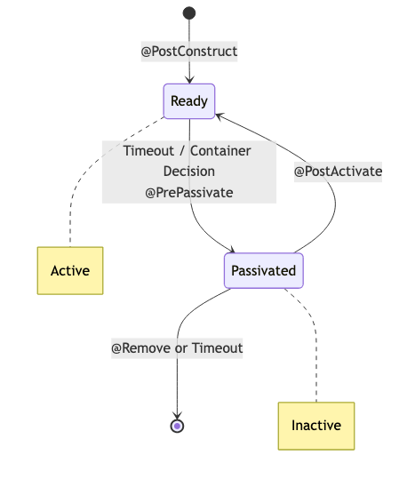
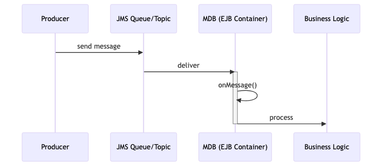
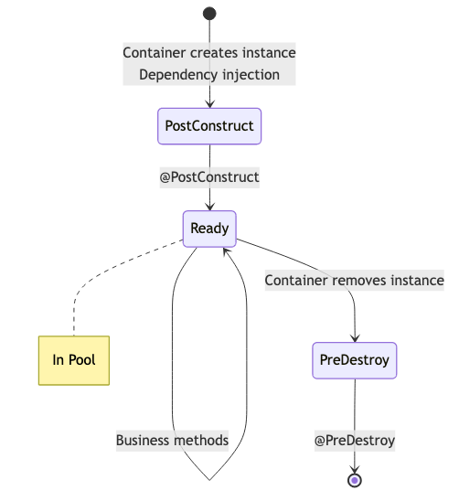
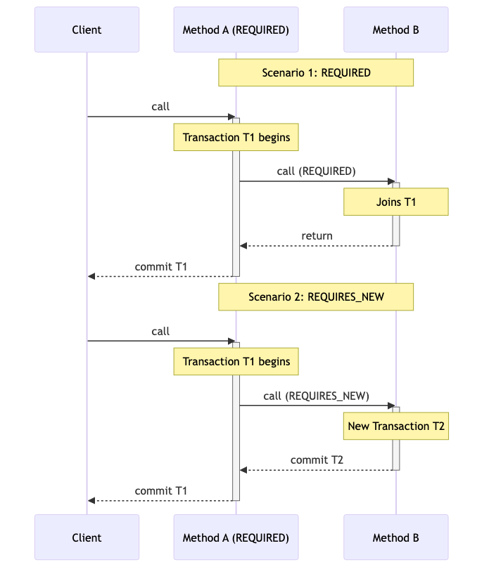

Enterprise Java Beans (EJB)
Jakarta EE 10
ESIPE - Advanced Java EE & Microservices
Lecture 4B - 3 Hours
1 / 106Learning Objectives
By the end of this lecture, you will be able to:
- ✅ Understand EJB architecture and container services
- ✅ Implement Stateless, Stateful, and Singleton Session Beans
- ✅ Create Message-Driven Beans for asynchronous processing
- ✅ Manage transactions with CMT and BMT
- ✅ Implement declarative and programmatic security
- ✅ Use Timer Service for scheduled tasks
- ✅ Create asynchronous methods
- ✅ Compare EJB vs CDI and choose appropriately
Table of Contents
- Introduction to EJB (15 min)
- Session Beans (45 min)
- Message-Driven Beans (30 min)
- EJB Lifecycle (20 min)
- Transaction Management (30 min)
- Security with EJB (20 min)
- Timer Service (20 min)
- Asynchronous Methods (15 min)
- EJB vs CDI (15 min)
- Best Practices (10 min)
1. Introduction to EJB
History, Architecture, and Container Services
4 / 106What are Enterprise Java Beans?
EJB is a server-side component architecture for building:
- Transactional business logic
- Scalable enterprise applications
- Distributed systems
- Secure components
java
@Stateless
public class AccountService {
@PersistenceContext
private EntityManager em;
public Account findAccount(Long id) {
return em.find(Account.class, id);
}
}
5 / 106
History and Evolution
| Version | Year | Key Features |
|---|---|---|
| EJB 1.0 | 1998 | Initial release, complex |
| EJB 2.0 | 2001 | Local interfaces, MDB |
| EJB 3.0 | 2006 | Annotations, simplified |
| EJB 3.1 | 2009 | No-interface view, Singleton |
| EJB 3.2 | 2013 | Async methods, improvements |
| Jakarta EE 8 | 2019 | Namespace change |
| Jakarta EE 10 | 2022 | Current version |
EJB in Jakarta EE 10
Key Changes:
- Namespace:
javax.ejb.→jakarta.ejb. - Simplified deployment
- Better CDI integration
- Modern Java features support
Status:
- ✅ Still actively maintained
- ✅ Production-ready
- ✅ Enterprise-grade features
- ⚠️ Some features deprecated (Entity Beans, Remote EJB)
EJB Architecture

8 / 106Container Services
What the EJB Container provides:
- Transaction Management - Automatic ACID transactions
- Security - Declarative authorization
- Concurrency - Thread-safe bean access
- Lifecycle - Creation, pooling, destruction
- Dependency Injection - Resource and bean injection
- Persistence - EntityManager integration
- Messaging - JMS integration
- Timers - Scheduled execution
Types of EJB
Session Beans (Business Logic)
- Stateless - No conversational state
- Stateful - Maintains client state
- Singleton - Single instance per application
Message-Driven Beans (Asynchronous Processing)
- JMS message consumers
- Event-driven architecture
~~Entity Beans~~ (Deprecated)
- Replaced by JPA entities
When to Use EJB
Use EJB when you need:
- ✅ Distributed transactions
- ✅ Container-managed security
- ✅ Message-driven processing
- ✅ Scheduled tasks (timers)
- ✅ Asynchronous methods
- ✅ Remote access (if required)
Consider CDI when:
- ❌ Simple dependency injection
- ❌ Web-tier components
- ❌ No transaction requirements
- ❌ Lightweight services
EJB vs CDI Quick Comparison
| Feature | EJB | CDI |
|---|---|---|
| Transactions | ✅ CMT/BMT | ⚠️ Manual |
| Security | ✅ Declarative | ⚠️ Manual |
| Messaging | ✅ MDB | ❌ No |
| Timers | ✅ Built-in | ❌ No |
| Async | ✅ @Asynchronous | ⚠️ Limited |
| Pooling | ✅ Automatic | ❌ No |
| Complexity | ⚠️ Higher | ✅ Lower |
2. Session Beans
Stateless, Stateful, and Singleton
13 / 106Session Beans Overview
Session Beans encapsulate business logic:
java
// Business Interface (optional)
public interface AccountService {
Account findAccount(Long id);
void deposit(Long accountId, BigDecimal amount);
}
// Bean Implementation
@Stateless
public class AccountServiceBean implements AccountService {
@PersistenceContext
private EntityManager em;
@Override
public Account findAccount(Long id) {
return em.find(Account.class, id);
}
}
14 / 106
Stateless Session Beans
Characteristics:
- ✅ No conversational state
- ✅ Pooled by container
- ✅ Highly scalable
- ✅ Thread-safe
- ✅ Best for stateless operations
Use Cases:
- Service layer operations
- Data access
- Calculations
- Validations
Stateless Bean Example
java
/**
* Account service for banking operations.
* Stateless bean - no client state maintained.
*
* @author ESIPE
*/
@Stateless
public class AccountService {
@PersistenceContext
private EntityManager em;
@Inject
private Logger logger;
/**
* Find account by ID.
* @param id Account identifier
* @return Account or null
*/
public Account findAccount(Long id) {
logger.info("Finding account: " + id);
return em.find(Account.class, id);
}
}
16 / 106
Stateless Bean - Deposit Operation
java
@Stateless
public class AccountService {
@PersistenceContext
private EntityManager em;
/**
* Deposit money into account.
* Transaction managed by container.
*
* @param accountId Account identifier
* @param amount Amount to deposit
* @throws IllegalArgumentException if amount is negative
*/
@TransactionAttribute(TransactionAttributeType.REQUIRED)
public void deposit(Long accountId, BigDecimal amount) {
if (amount.compareTo(BigDecimal.ZERO) <= 0) {
throw new IllegalArgumentException("Amount must be positive");
}
Account account = em.find(Account.class, accountId);
if (account == null) {
throw new EntityNotFoundException("Account not found");
}
account.setBalance(account.getBalance().add(amount));
// Container commits transaction automatically
}
}
17 / 106
Stateless Bean Pooling

Configuration:
xml
<stateless-session-bean>
<pool-size>10</pool-size>
<max-pool-size>50</max-pool-size>
</stateless-session-bean>
18 / 106
Stateful Session Beans
Characteristics:
- ✅ Maintains conversational state
- ✅ One instance per client
- ✅ State preserved between calls
- ⚠️ Less scalable than stateless
- ⚠️ Requires passivation/activation
Use Cases:
- Shopping carts
- Multi-step wizards
- User sessions
- Conversational workflows
Stateful Bean Example - Shopping Cart
java
/**
* Shopping cart for online banking products.
* Maintains state for a single client session.
*
* @author ESIPE
*/
@Stateful
public class ShoppingCart implements Serializable {
private static final long serialVersionUID = 1L;
private List<Product> items = new ArrayList<>();
private String customerId;
@Inject
private Logger logger;
/**
* Initialize cart for customer.
*/
@PostConstruct
public void init() {
logger.info("Shopping cart created");
}
/**
* Add product to cart.
*/
public void addItem(Product product) {
items.add(product);
logger.info("Added item: " + product.getName());
}
}
20 / 106
Stateful Bean - Complete Shopping Cart
java
@Stateful
public class ShoppingCart implements Serializable {
private List<Product> items = new ArrayList<>();
private BigDecimal total = BigDecimal.ZERO;
public void addItem(Product product) {
items.add(product);
total = total.add(product.getPrice());
}
public void removeItem(Product product) {
items.remove(product);
total = total.subtract(product.getPrice());
}
public BigDecimal getTotal() {
return total;
}
public List<Product> getItems() {
return new ArrayList<>(items);
}
@Remove
public void checkout() {
// Process order
items.clear();
total = BigDecimal.ZERO;
}
}
21 / 106
Stateful Bean Lifecycle

22 / 106Stateful Bean - Lifecycle Callbacks
java
@Stateful
public class ShoppingCart implements Serializable {
private List<Product> items = new ArrayList<>();
@PostConstruct
public void init() {
System.out.println("Cart created");
}
@PrePassivate
public void aboutToPassivate() {
System.out.println("Cart being passivated");
// Clean up non-serializable resources
}
@PostActivate
public void justActivated() {
System.out.println("Cart activated");
// Restore resources
}
@PreDestroy
public void cleanup() {
System.out.println("Cart destroyed");
}
@Remove
public void checkout() {
// Triggers @PreDestroy
}
}
23 / 106
Singleton Session Beans
Characteristics:
- ✅ Single instance per application
- ✅ Shared state across all clients
- ✅ Concurrency management
- ✅ Startup initialization
- ✅ Application-wide cache
Use Cases:
- Configuration management
- Application cache
- Counters/statistics
- Shared resources
Singleton Bean Example
java
/**
* Configuration manager for banking application.
* Single instance shared across all clients.
*
* @author ESIPE
*/
@Singleton
@Startup // Initialize at application startup
public class ConfigurationManager {
private Map<String, String> config = new ConcurrentHashMap<>();
@Inject
private Logger logger;
/**
* Load configuration at startup.
*/
@PostConstruct
public void loadConfiguration() {
logger.info("Loading application configuration");
config.put("max.transfer.amount", "10000.00");
config.put("daily.withdrawal.limit", "5000.00");
config.put("interest.rate", "0.025");
}
@Lock(LockType.READ)
public String getProperty(String key) {
return config.get(key);
}
}
25 / 106
Singleton Bean - Concurrency Management
java
@Singleton
public class ConfigurationManager {
private Map<String, String> config = new ConcurrentHashMap<>();
/**
* Read operation - multiple threads allowed.
*/
@Lock(LockType.READ)
public String getProperty(String key) {
return config.get(key);
}
/**
* Write operation - exclusive access.
*/
@Lock(LockType.WRITE)
public void setProperty(String key, String value) {
config.put(key, value);
}
/**
* Bean-managed concurrency.
*/
@ConcurrencyManagement(ConcurrencyManagementType.BEAN)
public synchronized void updateConfig(Map<String, String> newConfig) {
config.putAll(newConfig);
}
}
26 / 106
Singleton Bean - Startup Order
java
/**
* Database initialization - runs first.
*/
@Singleton
@Startup
@DependsOn({}) // No dependencies
public class DatabaseInitializer {
@PostConstruct
public void init() {
System.out.println("1. Database initialized");
}
}
/**
* Configuration loader - runs after database.
*/
@Singleton
@Startup
@DependsOn("DatabaseInitializer")
public class ConfigurationLoader {
@PostConstruct
public void init() {
System.out.println("2. Configuration loaded");
}
}
27 / 106
Singleton Bean - Application Cache
java
/**
* Cache for frequently accessed data.
*/
@Singleton
@ConcurrencyManagement(ConcurrencyManagementType.CONTAINER)
public class AccountCache {
private Map<Long, Account> cache = new ConcurrentHashMap<>();
@PersistenceContext
private EntityManager em;
@Lock(LockType.READ)
public Account getAccount(Long id) {
return cache.computeIfAbsent(id,
key -> em.find(Account.class, key));
}
@Lock(LockType.WRITE)
public void invalidate(Long id) {
cache.remove(id);
}
@Lock(LockType.WRITE)
public void clear() {
cache.clear();
}
}
28 / 106
Session Beans Comparison
| Feature | Stateless | Stateful | Singleton |
|---|---|---|---|
| State | None | Per-client | Shared |
| Instances | Pool | One per client | One total |
| Scalability | ✅ High | ⚠️ Medium | ⚠️ Low |
| Concurrency | ✅ Automatic | ✅ Automatic | ⚠️ Manual |
| Use Case | Services | Sessions | Config |
| Passivation | ❌ No | ✅ Yes | ❌ No |
3. Message-Driven Beans
Asynchronous Processing with JMS
30 / 106Message-Driven Beans (MDB)
Characteristics:
- ✅ Asynchronous message processing
- ✅ JMS integration
- ✅ No client interface
- ✅ Container-managed lifecycle
- ✅ Transaction support
Use Cases:
- Event processing
- Background tasks
- System integration
- Decoupled communication
MDB Architecture

32 / 106MDB Example - Transaction Processor
java
/**
* Processes banking transactions asynchronously.
* Listens to transaction queue.
*
* @author ESIPE
*/
@MessageDriven(
activationConfig = {
@ActivationConfigProperty(
propertyName = "destinationType",
propertyValue = "jakarta.jms.Queue"
),
@ActivationConfigProperty(
propertyName = "destination",
propertyValue = "java:/jms/queue/TransactionQueue"
),
@ActivationConfigProperty(
propertyName = "acknowledgeMode",
propertyValue = "Auto-acknowledge"
)
}
)
public class TransactionProcessor implements MessageListener {
@Inject
private Logger logger;
}
33 / 106
MDB - Message Processing
java
@MessageDriven(activationConfig = {
@ActivationConfigProperty(
propertyName = "destination",
propertyValue = "java:/jms/queue/TransactionQueue"
)
})
public class TransactionProcessor implements MessageListener {
@PersistenceContext
private EntityManager em;
@Inject
private Logger logger;
@Override
public void onMessage(Message message) {
try {
if (message instanceof TextMessage) {
TextMessage textMessage = (TextMessage) message;
String transactionData = textMessage.getText();
logger.info("Processing transaction: " + transactionData);
processTransaction(transactionData);
}
} catch (JMSException e) {
logger.error("Error processing message", e);
throw new EJBException(e);
}
}
}
34 / 106
MDB - Complete Implementation
java
@MessageDriven(activationConfig = {
@ActivationConfigProperty(
propertyName = "destination",
propertyValue = "java:/jms/queue/TransactionQueue"
),
@ActivationConfigProperty(
propertyName = "maxSessions",
propertyValue = "10" // Concurrent consumers
)
})
public class TransactionProcessor implements MessageListener {
@PersistenceContext
private EntityManager em;
@Override
@TransactionAttribute(TransactionAttributeType.REQUIRED)
public void onMessage(Message message) {
try {
ObjectMessage objMsg = (ObjectMessage) message;
TransactionDTO dto = (TransactionDTO) objMsg.getObject();
// Process transaction
Transaction tx = new Transaction();
tx.setAmount(dto.getAmount());
tx.setAccountId(dto.getAccountId());
tx.setTimestamp(LocalDateTime.now());
em.persist(tx);
} catch (JMSException e) {
throw new EJBException("Transaction processing failed", e);
}
}
}
35 / 106
MDB - Sending Messages
java
@Stateless
public class TransactionService {
@Resource(lookup = "java:/jms/queue/TransactionQueue")
private Queue transactionQueue;
@Inject
private JMSContext jmsContext;
/**
* Submit transaction for async processing.
*/
public void submitTransaction(TransactionDTO transaction) {
try {
ObjectMessage message = jmsContext.createObjectMessage();
message.setObject(transaction);
// Set message properties
message.setStringProperty("type", "TRANSFER");
message.setLongProperty("accountId", transaction.getAccountId());
// Send message
jmsContext.createProducer()
.send(transactionQueue, message);
} catch (JMSException e) {
throw new RuntimeException("Failed to send message", e);
}
}
}
36 / 106
MDB - Error Handling
java
@MessageDriven(activationConfig = {
@ActivationConfigProperty(
propertyName = "destination",
propertyValue = "java:/jms/queue/TransactionQueue"
)
})
public class TransactionProcessor implements MessageListener {
@Resource
private MessageDrivenContext mdc;
@Override
public void onMessage(Message message) {
try {
processMessage(message);
} catch (BusinessException e) {
// Rollback transaction - message returns to queue
mdc.setRollbackOnly();
logger.error("Business error, message will be redelivered", e);
} catch (Exception e) {
// Fatal error - send to dead letter queue
logger.error("Fatal error processing message", e);
throw new EJBException(e);
}
}
private void processMessage(Message message) throws BusinessException {
// Processing logic
}
}
37 / 106
MDB - Topic Subscription
java
/**
* Listens to account events topic.
* Multiple subscribers can receive same message.
*/
@MessageDriven(activationConfig = {
@ActivationConfigProperty(
propertyName = "destinationType",
propertyValue = "jakarta.jms.Topic"
),
@ActivationConfigProperty(
propertyName = "destination",
propertyValue = "java:/jms/topic/AccountEvents"
),
@ActivationConfigProperty(
propertyName = "subscriptionDurability",
propertyValue = "Durable"
),
@ActivationConfigProperty(
propertyName = "clientId",
propertyValue = "NotificationService"
),
@ActivationConfigProperty(
propertyName = "subscriptionName",
propertyValue = "NotificationSubscription"
)
})
public class AccountEventListener implements MessageListener {
// Implementation
}
38 / 106
4. EJB Lifecycle
Callbacks and Resource Management
39 / 106EJB Lifecycle Overview
Lifecycle Callbacks:
@PostConstruct- After dependency injection@PreDestroy- Before bean removal@PrePassivate- Before passivation (Stateful)@PostActivate- After activation (Stateful)
Purpose:
- Initialize resources
- Clean up resources
- Prepare for passivation
- Restore after activation
Stateless Bean Lifecycle

41 / 106Lifecycle Callbacks - Stateless
java
@Stateless
public class AccountService {
@PersistenceContext
private EntityManager em;
@Resource
private DataSource dataSource;
private Connection connection;
/**
* Initialize resources after dependency injection.
*/
@PostConstruct
public void init() {
System.out.println("AccountService initialized");
try {
connection = dataSource.getConnection();
} catch (SQLException e) {
throw new EJBException("Failed to get connection", e);
}
}
/**
* Clean up resources before destruction.
*/
@PreDestroy
public void cleanup() {
System.out.println("AccountService destroyed");
try {
if (connection != null) {
connection.close();
}
} catch (SQLException e) {
// Log error
}
}
}
42 / 106
Lifecycle Callbacks - Stateful
java
@Stateful
public class ShoppingCart implements Serializable {
private List<Product> items = new ArrayList<>();
@Inject
private transient Logger logger; // Non-serializable
@PostConstruct
public void init() {
logger.info("Shopping cart created");
}
@PrePassivate
public void aboutToPassivate() {
logger.info("Cart being passivated");
// Clean up non-serializable resources
// logger will be null after passivation
}
@PostActivate
public void justActivated() {
// logger is re-injected
logger.info("Cart activated from passivation");
// Restore transient state if needed
}
@PreDestroy
public void cleanup() {
logger.info("Cart destroyed");
}
}
43 / 106
Dependency Injection in EJB
java
@Stateless
public class BankingService {
// EntityManager injection
@PersistenceContext(unitName = "bankingPU")
private EntityManager em;
// Resource injection
@Resource(lookup = "java:/jms/queue/TransactionQueue")
private Queue transactionQueue;
// EJB injection
@EJB
private AccountService accountService;
// CDI injection
@Inject
private Logger logger;
// Environment entry
@Resource(name = "maxTransferAmount")
private BigDecimal maxTransferAmount;
// EJBContext injection
@Resource
private SessionContext context;
}
44 / 106
Resource Management Best Practices
java
@Stateless
public class ReportService {
@Resource
private DataSource dataSource;
/**
* Proper resource management with try-with-resources.
*/
public List<Transaction> generateReport(LocalDate date) {
// Connection auto-closed
try (Connection conn = dataSource.getConnection();
PreparedStatement stmt = conn.prepareStatement(
"SELECT * FROM transactions WHERE date = ?")) {
stmt.setDate(1, Date.valueOf(date));
try (ResultSet rs = stmt.executeQuery()) {
List<Transaction> transactions = new ArrayList<>();
while (rs.next()) {
transactions.add(mapTransaction(rs));
}
return transactions;
}
} catch (SQLException e) {
throw new EJBException("Report generation failed", e);
}
}
}
45 / 106
5. Transaction Management
CMT and BMT
46 / 106Transaction Management Overview
Two Approaches:
- Container-Managed Transactions (CMT)
- Declarative with annotations
- Container handles begin/commit/rollback
- Recommended approach
- Bean-Managed Transactions (BMT)
- Programmatic control
- Developer handles transactions
- More flexibility, more complexity
Container-Managed Transactions (CMT)
Transaction Attributes:
| Attribute | Description |
|---|---|
REQUIRED | Join existing or create new (default) |
REQUIRES_NEW | Always create new transaction |
MANDATORY | Must have existing transaction |
NOT_SUPPORTED | Suspend transaction |
SUPPORTS | Join if exists, else no transaction |
NEVER | Fail if transaction exists |
CMT - REQUIRED Example
java
@Stateless
public class TransferService {
@PersistenceContext
private EntityManager em;
/**
* Transfer money between accounts.
* REQUIRED: Join existing transaction or create new one.
*/
@TransactionAttribute(TransactionAttributeType.REQUIRED)
public void transfer(Long fromId, Long toId, BigDecimal amount) {
Account fromAccount = em.find(Account.class, fromId);
Account toAccount = em.find(Account.class, toId);
if (fromAccount.getBalance().compareTo(amount) < 0) {
throw new InsufficientFundsException();
}
// Both operations in same transaction
fromAccount.setBalance(fromAccount.getBalance().subtract(amount));
toAccount.setBalance(toAccount.getBalance().add(amount));
// Container commits automatically
// If exception thrown, container rolls back
}
}
49 / 106
CMT - REQUIRES_NEW Example
java
@Stateless
public class AuditService {
@PersistenceContext
private EntityManager em;
/**
* Log audit entry in separate transaction.
* REQUIRES_NEW: Always create new transaction.
* Commits even if calling transaction rolls back.
*/
@TransactionAttribute(TransactionAttributeType.REQUIRES_NEW)
public void logAudit(String action, String details) {
AuditLog log = new AuditLog();
log.setAction(action);
log.setDetails(details);
log.setTimestamp(LocalDateTime.now());
em.persist(log);
// This transaction commits independently
}
}
@Stateless
public class AccountService {
@EJB
private AuditService auditService;
public void updateAccount(Account account) {
// Main transaction
em.merge(account);
// Audit in separate transaction
auditService.logAudit("UPDATE", "Account " + account.getId());
// If this fails, audit is still committed
}
}
50 / 106
CMT - Transaction Propagation

51 / 106CMT - Rollback Strategies
java
@Stateless
public class TransferService {
@Resource
private SessionContext context;
/**
* Automatic rollback on RuntimeException.
*/
@TransactionAttribute(TransactionAttributeType.REQUIRED)
public void transfer(Long fromId, Long toId, BigDecimal amount) {
// ... transfer logic ...
if (fraudDetected) {
// RuntimeException triggers automatic rollback
throw new FraudException("Suspicious transaction");
}
}
/**
* Manual rollback decision.
*/
public void processTransaction(Transaction tx) {
try {
// ... processing ...
} catch (BusinessException e) {
// Mark transaction for rollback
context.setRollbackOnly();
throw e;
}
}
}
52 / 106
Bean-Managed Transactions (BMT)
java
/**
* Bean-managed transaction example.
* Developer controls transaction boundaries.
*/
@Stateless
@TransactionManagement(TransactionManagementType.BEAN)
public class ComplexTransferService {
@Resource
private UserTransaction userTransaction;
@PersistenceContext
private EntityManager em;
/**
* Manual transaction management.
*/
public void complexTransfer(Long fromId, Long toId, BigDecimal amount) {
try {
// Begin transaction
userTransaction.begin();
// Business logic
Account from = em.find(Account.class, fromId);
Account to = em.find(Account.class, toId);
from.setBalance(from.getBalance().subtract(amount));
to.setBalance(to.getBalance().add(amount));
// Commit transaction
userTransaction.commit();
} catch (Exception e) {
try {
// Rollback on error
userTransaction.rollback();
} catch (SystemException se) {
throw new EJBException(se);
}
throw new EJBException(e);
}
}
}
53 / 106
BMT - Multiple Transactions
java
@Stateless
@TransactionManagement(TransactionManagementType.BEAN)
public class BatchProcessor {
@Resource
private UserTransaction userTransaction;
/**
* Process items in separate transactions.
* Allows partial success.
*/
public void processBatch(List<Transaction> transactions) {
int successCount = 0;
int failureCount = 0;
for (Transaction tx : transactions) {
try {
userTransaction.begin();
// Process single transaction
processTransaction(tx);
userTransaction.commit();
successCount++;
} catch (Exception e) {
try {
userTransaction.rollback();
} catch (SystemException se) {
// Log error
}
failureCount++;
}
}
System.out.println("Success: " + successCount +
", Failures: " + failureCount);
}
}
54 / 106
Transaction Best Practices
DO:
- ✅ Use CMT by default
- ✅ Keep transactions short
- ✅ Use REQUIRED for most operations
- ✅ Use REQUIRES_NEW for audit logs
- ✅ Handle exceptions properly
DON'T:
- ❌ Don't hold transactions during user interaction
- ❌ Don't mix CMT and BMT in same bean
- ❌ Don't catch RuntimeException without rollback
- ❌ Don't perform long-running operations in transactions
- ❌ Don't access remote resources in transactions
6. Security with EJB
Declarative and Programmatic Security
56 / 106EJB Security Overview
Two Approaches:
- Declarative Security
- Annotations on methods/classes
- Container enforces security
- Recommended approach
- Programmatic Security
- Code-based security checks
- More flexibility
- Use when declarative insufficient
Declarative Security Annotations
java
/**
* Secure account service with role-based access.
*/
@Stateless
@DeclareRoles({"ADMIN", "MANAGER", "CUSTOMER"})
public class SecureAccountService {
/**
* Only customers and managers can view accounts.
*/
@RolesAllowed({"CUSTOMER", "MANAGER"})
public Account findAccount(Long id) {
return em.find(Account.class, id);
}
/**
* Only managers can create accounts.
*/
@RolesAllowed("MANAGER")
public void createAccount(Account account) {
em.persist(account);
}
/**
* Only admins can delete accounts.
*/
@RolesAllowed("ADMIN")
public void deleteAccount(Long id) {
Account account = em.find(Account.class, id);
em.remove(account);
}
}
58 / 106
Security Annotations
java
@Stateless
public class AccountService {
/**
* Allow all authenticated users.
*/
@PermitAll
public List<Account> listAccounts() {
return em.createQuery("SELECT a FROM Account a", Account.class)
.getResultList();
}
/**
* Deny all access - administrative method.
*/
@DenyAll
public void resetDatabase() {
// This method cannot be called
}
/**
* Multiple roles allowed.
*/
@RolesAllowed({"ADMIN", "MANAGER"})
public void approveTransaction(Long txId) {
// Approve logic
}
}
59 / 106
Class-Level Security
java
/**
* All methods require MANAGER role by default.
*/
@Stateless
@RolesAllowed("MANAGER")
public class ManagementService {
/**
* Inherits @RolesAllowed("MANAGER") from class.
*/
public void generateReport() {
// Only managers can call
}
/**
* Override class-level security.
* Now admins and managers can call.
*/
@RolesAllowed({"ADMIN", "MANAGER"})
public void deleteReport(Long id) {
// Admins and managers can call
}
/**
* Override to allow all.
*/
@PermitAll
public void viewPublicReport() {
// Anyone can call
}
}
60 / 106
Programmatic Security
java
@Stateless
public class AccountService {
@Resource
private SessionContext context;
/**
* Check caller's role programmatically.
*/
public void updateAccount(Account account) {
// Check if caller is in role
if (context.isCallerInRole("MANAGER")) {
// Managers can update any account
em.merge(account);
} else if (context.isCallerInRole("CUSTOMER")) {
// Customers can only update their own account
String username = context.getCallerPrincipal().getName();
if (account.getOwner().equals(username)) {
em.merge(account);
} else {
throw new SecurityException("Not authorized");
}
} else {
throw new SecurityException("Not authorized");
}
}
}
61 / 106
Getting Caller Information
java
@Stateless
public class AuditService {
@Resource
private SessionContext context;
@PersistenceContext
private EntityManager em;
/**
* Log action with caller information.
*/
public void logAction(String action) {
// Get caller's principal
Principal caller = context.getCallerPrincipal();
String username = caller.getName();
// Create audit log
AuditLog log = new AuditLog();
log.setUsername(username);
log.setAction(action);
log.setTimestamp(LocalDateTime.now());
// Check roles
if (context.isCallerInRole("ADMIN")) {
log.setRole("ADMIN");
} else if (context.isCallerInRole("MANAGER")) {
log.setRole("MANAGER");
} else {
log.setRole("CUSTOMER");
}
em.persist(log);
}
}
62 / 106
@RunAs Annotation
java
/**
* Service runs with elevated privileges.
*/
@Stateless
@RunAs("SYSTEM")
public class SystemService {
@EJB
private SecureAccountService accountService;
/**
* This method runs as SYSTEM role,
* even if caller doesn't have required permissions.
*/
public void performSystemMaintenance() {
// Can call methods requiring ADMIN role
accountService.deleteAccount(123L);
// System operations
cleanupOldData();
}
}
@Stateless
public class SecureAccountService {
@RolesAllowed("ADMIN")
public void deleteAccount(Long id) {
// Only ADMIN can call directly
// But SystemService can call via @RunAs
}
}
63 / 106
Security Best Practices
DO:
- ✅ Use declarative security by default
- ✅ Define roles at class level when possible
- ✅ Use @DeclareRoles for documentation
- ✅ Log security events
- ✅ Validate input even with security
DON'T:
- ❌ Don't rely on security alone for validation
- ❌ Don't hardcode credentials
- ❌ Don't expose sensitive data in exceptions
- ❌ Don't use @PermitAll carelessly
- ❌ Don't forget to test security
7. Timer Service
Scheduled Tasks and Automatic Timers
65 / 106EJB Timer Service
Two Types of Timers:
- Programmatic Timers
- Created via TimerService API
- Dynamic scheduling
- Flexible configuration
- Automatic Timers
- Declared with @Schedule
- Calendar-based expressions
- Simpler to use
Automatic Timer - @Schedule
java
/**
* Daily report generator using automatic timer.
*/
@Singleton
public class DailyReportGenerator {
@Inject
private Logger logger;
@EJB
private ReportService reportService;
/**
* Generate daily report at 2 AM.
* Runs every day at 02:00:00.
*/
@Schedule(
hour = "2",
minute = "0",
second = "0",
persistent = true
)
public void generateDailyReport() {
logger.info("Generating daily report");
LocalDate yesterday = LocalDate.now().minusDays(1);
Report report = reportService.generateReport(yesterday);
logger.info("Daily report generated: " + report.getId());
}
}
67 / 106
@Schedule - Calendar Expressions
java
@Singleton
public class ScheduledTasks {
/**
* Every hour at minute 0.
*/
@Schedule(hour = "*", minute = "0")
public void hourlyTask() {
System.out.println("Hourly task");
}
/**
* Every 15 minutes.
*/
@Schedule(hour = "*", minute = "*/15")
public void quarterHourlyTask() {
System.out.println("Every 15 minutes");
}
/**
* Weekdays at 9 AM.
*/
@Schedule(
dayOfWeek = "Mon-Fri",
hour = "9",
minute = "0"
)
public void weekdayMorningTask() {
System.out.println("Weekday morning task");
}
}
68 / 106
@Schedule - Advanced Examples
java
@Singleton
public class AdvancedScheduledTasks {
/**
* First day of month at midnight.
*/
@Schedule(
dayOfMonth = "1",
hour = "0",
minute = "0"
)
public void monthlyTask() {
System.out.println("Monthly task");
}
/**
* Last day of month at 11:59 PM.
*/
@Schedule(
dayOfMonth = "Last",
hour = "23",
minute = "59"
)
public void endOfMonthTask() {
System.out.println("End of month task");
}
/**
* Every Monday at 8 AM.
*/
@Schedule(
dayOfWeek = "Mon",
hour = "8",
minute = "0",
timezone = "Europe/Paris"
)
public void mondayMorningTask() {
System.out.println("Monday morning task");
}
}
69 / 106
Multiple Schedules
java
@Singleton
public class BackupService {
/**
* Multiple schedules for same method.
*/
@Schedules({
@Schedule(
hour = "2",
minute = "0",
info = "Daily backup"
),
@Schedule(
dayOfWeek = "Sun",
hour = "3",
minute = "0",
info = "Weekly full backup"
)
})
public void performBackup(Timer timer) {
String info = timer.getInfo().toString();
System.out.println("Performing backup: " + info);
if (info.contains("full")) {
performFullBackup();
} else {
performIncrementalBackup();
}
}
}
70 / 106
Programmatic Timers
java
@Stateless
public class NotificationService {
@Resource
private TimerService timerService;
/**
* Create single-action timer.
*/
public void scheduleNotification(Long userId, long delayMillis) {
// Create timer that fires once after delay
TimerConfig config = new TimerConfig();
config.setInfo("Notification for user: " + userId);
config.setPersistent(false);
timerService.createSingleActionTimer(delayMillis, config);
}
/**
* Create interval timer.
*/
public void schedulePeriodicCheck(long intervalMillis) {
TimerConfig config = new TimerConfig();
config.setInfo("Periodic check");
timerService.createIntervalTimer(
0, // Initial delay
intervalMillis, // Interval
config
);
}
}
71 / 106
Timer Callback Method
java
@Singleton
public class TimerBean {
@Resource
private TimerService timerService;
@Inject
private Logger logger;
/**
* Create programmatic timer.
*/
@PostConstruct
public void init() {
TimerConfig config = new TimerConfig();
config.setInfo("Cleanup timer");
// Every 5 minutes
timerService.createIntervalTimer(0, 5 * 60 * 1000, config);
}
/**
* Timeout callback method.
*/
@Timeout
public void handleTimeout(Timer timer) {
String info = (String) timer.getInfo();
logger.info("Timer fired: " + info);
// Perform cleanup
performCleanup();
// Cancel timer if needed
if (shouldStop()) {
timer.cancel();
}
}
}
72 / 106
Timer Persistence
java
@Singleton
public class PersistentTimerService {
@Resource
private TimerService timerService;
/**
* Persistent timer survives server restart.
*/
@Schedule(
hour = "*/6", // Every 6 hours
minute = "0",
persistent = true // Survives restart
)
public void persistentTask() {
System.out.println("Persistent task");
}
/**
* Non-persistent timer lost on restart.
*/
public void createNonPersistentTimer() {
TimerConfig config = new TimerConfig();
config.setPersistent(false); // Lost on restart
timerService.createIntervalTimer(0, 60000, config);
}
/**
* Get all active timers.
*/
public void listTimers() {
Collection<Timer> timers = timerService.getTimers();
for (Timer timer : timers) {
System.out.println("Timer: " + timer.getInfo());
}
}
}
73 / 106
Timer Best Practices
DO:
- ✅ Use @Schedule for simple recurring tasks
- ✅ Use programmatic timers for dynamic scheduling
- ✅ Set persistent=true for critical timers
- ✅ Handle exceptions in timer methods
- ✅ Cancel timers when no longer needed
DON'T:
- ❌ Don't create too many timers
- ❌ Don't perform long-running operations
- ❌ Don't forget timezone considerations
- ❌ Don't rely on exact timing
- ❌ Don't create duplicate timers
8. Asynchronous Methods
Non-Blocking Operations
75 / 106Asynchronous Methods
Benefits:
- ✅ Non-blocking execution
- ✅ Improved responsiveness
- ✅ Better resource utilization
- ✅ Parallel processing
Use Cases:
- Email notifications
- Report generation
- Background processing
- Long-running operations
@Asynchronous - Fire and Forget
java
/**
* Email notification service with async methods.
*/
@Stateless
public class EmailNotificationService {
@Inject
private Logger logger;
@Resource(lookup = "java:/mail/BankingMailSession")
private Session mailSession;
/**
* Send email asynchronously.
* Fire-and-forget pattern - no return value.
*/
@Asynchronous
public void sendWelcomeEmail(String email, String name) {
logger.info("Sending welcome email to: " + email);
try {
Message message = new MimeMessage(mailSession);
message.setRecipients(
Message.RecipientType.TO,
InternetAddress.parse(email)
);
message.setSubject("Welcome to Banking App");
message.setText("Hello " + name + ",\n\nWelcome!");
Transport.send(message);
logger.info("Welcome email sent to: " + email);
} catch (MessagingException e) {
logger.error("Failed to send email", e);
}
}
}
77 / 106
@Asynchronous - With Future
java
@Stateless
public class ReportService {
@PersistenceContext
private EntityManager em;
/**
* Generate report asynchronously.
* Returns Future for result retrieval.
*/
@Asynchronous
public Future<Report> generateMonthlyReport(int year, int month) {
try {
// Long-running operation
Report report = new Report();
report.setYear(year);
report.setMonth(month);
// Fetch data
List<Transaction> transactions = fetchTransactions(year, month);
// Calculate statistics
BigDecimal total = calculateTotal(transactions);
report.setTotal(total);
// Save report
em.persist(report);
// Return result wrapped in AsyncResult
return new AsyncResult<>(report);
} catch (Exception e) {
// Return exception
return new AsyncResult<>(e);
}
}
}
78 / 106
Using Asynchronous Methods
java
@Stateless
public class AccountService {
@EJB
private EmailNotificationService emailService;
@EJB
private ReportService reportService;
/**
* Create account and send notification.
*/
public Account createAccount(Account account) {
// Synchronous operation
em.persist(account);
// Asynchronous notification - doesn't block
emailService.sendWelcomeEmail(
account.getEmail(),
account.getOwnerName()
);
return account;
}
/**
* Generate report and wait for result.
*/
public Report generateAndRetrieveReport(int year, int month) {
// Start async operation
Future<Report> futureReport =
reportService.generateMonthlyReport(year, month);
try {
// Wait for result (with timeout)
Report report = futureReport.get(30, TimeUnit.SECONDS);
return report;
} catch (TimeoutException e) {
futureReport.cancel(true);
throw new RuntimeException("Report generation timeout");
} catch (Exception e) {
throw new RuntimeException("Report generation failed", e);
}
}
}
79 / 106
Parallel Async Operations
java
@Stateless
public class BatchReportService {
@EJB
private ReportService reportService;
/**
* Generate multiple reports in parallel.
*/
public List<Report> generateQuarterlyReports(int year, int quarter) {
// Start all reports in parallel
List<Future<Report>> futures = new ArrayList<>();
int startMonth = (quarter - 1) * 3 + 1;
for (int i = 0; i < 3; i++) {
int month = startMonth + i;
Future<Report> future =
reportService.generateMonthlyReport(year, month);
futures.add(future);
}
// Collect results
List<Report> reports = new ArrayList<>();
for (Future<Report> future : futures) {
try {
Report report = future.get(60, TimeUnit.SECONDS);
reports.add(report);
} catch (Exception e) {
// Handle error
}
}
return reports;
}
}
80 / 106
Async Best Practices
DO:
- ✅ Use for long-running operations
- ✅ Use fire-and-forget for notifications
- ✅ Use Future
when result needed - ✅ Set appropriate timeouts
- ✅ Handle exceptions properly
DON'T:
- ❌ Don't use for short operations
- ❌ Don't block on Future.get() unnecessarily
- ❌ Don't forget timeout handling
- ❌ Don't create too many async calls
- ❌ Don't use for transactional operations
9. EJB vs CDI
Choosing the Right Technology
82 / 106EJB vs CDI Comparison
| Feature | EJB | CDI |
|---|---|---|
| Purpose | Business components | Dependency injection |
| Transactions | ✅ Built-in CMT/BMT | ⚠️ Manual with JTA |
| Security | ✅ Declarative | ⚠️ Manual |
| Messaging | ✅ MDB support | ❌ No |
| Timers | ✅ @Schedule | ❌ No |
| Async | ✅ @Asynchronous | ⚠️ Limited |
| Pooling | ✅ Automatic | ❌ No |
| Remoting | ✅ Yes | ❌ No |
| Complexity | ⚠️ Higher | ✅ Lower |
| Flexibility | ⚠️ Lower | ✅ Higher |
When to Use EJB
Use EJB when you need:
- Distributed Transactions
```java
@Stateless
@TransactionAttribute(TransactionAttributeType.REQUIRED)
public class TransferService {
// Automatic transaction management
}
```
- Declarative Security
```java
@Stateless
@RolesAllowed("MANAGER")
public class ManagementService {
// Container-enforced security
}
```
- Message-Driven Processing
```java
@MessageDriven
public class OrderProcessor implements MessageListener {
// Async message processing
}
```
84 / 106When to Use CDI
Use CDI when you need:
- Simple Dependency Injection
```java
@ApplicationScoped
public class ConfigService {
@Inject
private Logger logger;
}
```
- Web-Tier Components
```java
@RequestScoped
public class LoginController {
// Web request handling
}
```
- Event-Driven Architecture
```java
@ApplicationScoped
public class EventPublisher {
@Inject
private Event
public void publishOrder(Order order) {
orderEvent.fire(new OrderEvent(order));
}
}
```
85 / 106Mixing EJB and CDI
You can use both together:
java
/**
* EJB with CDI injection.
*/
@Stateless
public class AccountService {
// CDI injection in EJB
@Inject
private Logger logger;
@Inject
private ConfigService configService;
// EJB features
@TransactionAttribute(TransactionAttributeType.REQUIRED)
public void createAccount(Account account) {
logger.info("Creating account");
String maxAmount = configService.getProperty("max.amount");
// ...
}
}
/**
* CDI bean with EJB injection.
*/
@RequestScoped
public class AccountController {
// EJB injection in CDI bean
@EJB
private AccountService accountService;
public void createAccount() {
accountService.createAccount(new Account());
}
}
86 / 106
Migration Strategy: EJB to CDI
Step 1: Identify candidates
java
// Simple EJB - good candidate for CDI
@Stateless
public class SimpleService {
public String getMessage() {
return "Hello";
}
}
// Complex EJB - keep as EJB
@Stateless
@TransactionAttribute(TransactionAttributeType.REQUIRED)
@RolesAllowed("ADMIN")
public class ComplexService {
// Needs EJB features
}
Step 2: Convert simple beans
java
// Converted to CDI
@ApplicationScoped
public class SimpleService {
public String getMessage() {
return "Hello";
}
}
87 / 106
Decision Matrix
| Feature | Use EJB | Use CDI |
|---|---|---|
| Transactions | ✅ CMT/BMT | ⚠️ Manual JTA |
| Async Processing | ✅ @Asynchronous | ⚠️ Manual threads |
| Scheduling | ✅ @Schedule | ❌ External scheduler |
| Messaging | ✅ MDB | ⚠️ Manual JMS |
| Security | ✅ Built-in | ⚠️ Manual |
| Remoting | ✅ Built-in | ❌ Not supported |
| Simplicity | ⚠️ More complex | ✅ Simpler |
| Flexibility | ⚠️ Less flexible | ✅ More flexible |
| Testing | ⚠️ Harder | ✅ Easier |
| Modern Apps | ⚠️ Legacy feel | ✅ Modern approach |
10. Best Practices
Performance, Testing, and Common Pitfalls
89 / 106EJB Best Practices
Performance Considerations
1. Choose the Right Bean Type
- Use Stateless for stateless operations (better scalability)
- Use Stateful only when necessary (memory overhead)
- Use Singleton for shared state (careful with concurrency)
2. Transaction Management
- Keep transactions short
- Use REQUIRES_NEW sparingly (performance impact)
- Avoid long-running transactions
- Consider async processing for heavy operations
3. Pooling and Caching
- Configure appropriate pool sizes
- Use caching for frequently accessed data
- Leverage Singleton beans for application-wide cache
Testing Strategies
Unit Testing
java
public class AccountServiceTest {
private AccountService service;
private EntityManager em;
@BeforeEach
void setUp() {
service = new AccountServiceBean();
em = mock(EntityManager.class);
// Inject mocked EntityManager
setField(service, "em", em);
}
@Test
void testDeposit() {
Account account = new Account();
account.setBalance(BigDecimal.valueOf(100));
when(em.find(Account.class, 1L)).thenReturn(account);
service.deposit(1L, BigDecimal.valueOf(50));
assertEquals(BigDecimal.valueOf(150), account.getBalance());
}
}
91 / 106
Integration Testing
Arquillian for EJB Testing
java
@RunWith(Arquillian.class)
public class AccountServiceIT {
@Deployment
public static Archive<?> createDeployment() {
return ShrinkWrap.create(WebArchive.class)
.addClass(AccountService.class)
.addClass(AccountServiceBean.class)
.addAsResource("test-persistence.xml",
"META-INF/persistence.xml")
.addAsWebInfResource(EmptyAsset.INSTANCE,
"beans.xml");
}
@Inject
private AccountService accountService;
@Test
@InSequence(1)
public void testTransfer() {
accountService.transfer(1L, 2L,
BigDecimal.valueOf(100));
// Assertions...
}
}
92 / 106
Common Pitfalls
1. Transaction Boundaries
❌ Wrong:
java
@Stateless
public class OrderService {
@Inject
private InventoryService inventory;
@TransactionAttribute(NEVER)
public void processOrder(Order order) {
// No transaction!
inventory.reserve(order.getItems()); // Fails!
}
}
✅ Correct:
java
@Stateless
public class OrderService {
@Inject
private InventoryService inventory;
@TransactionAttribute(REQUIRED)
public void processOrder(Order order) {
inventory.reserve(order.getItems());
}
}
93 / 106
Common Pitfalls (2)
2. Stateful Bean Memory Leaks
❌ Wrong:
java
@Stateful
public class ShoppingCartBean {
private List<Item> items = new ArrayList<>();
public void addItem(Item item) {
items.add(item);
}
// No @Remove method - beans never destroyed!
}
✅ Correct:
java
@Stateful
public class ShoppingCartBean {
private List<Item> items = new ArrayList<>();
public void addItem(Item item) {
items.add(item);
}
@Remove
public void checkout() {
// Process checkout
items.clear();
}
}
94 / 106
Common Pitfalls (3)
3. Singleton Concurrency Issues
❌ Wrong:
java
@Singleton
public class CounterBean {
private int count = 0;
public void increment() {
count++; // Race condition!
}
}
✅ Correct:
java
@Singleton
@Lock(LockType.WRITE)
public class CounterBean {
private AtomicInteger count = new AtomicInteger(0);
public void increment() {
count.incrementAndGet();
}
@Lock(LockType.READ)
public int getCount() {
return count.get();
}
}
95 / 106
Common Pitfalls (4)
4. Circular Dependencies
❌ Wrong:
java
@Stateless
public class ServiceA {
@EJB
private ServiceB serviceB; // Circular!
}
@Stateless
public class ServiceB {
@EJB
private ServiceA serviceA; // Circular!
}
✅ Correct:
java
@Stateless
public class ServiceA {
@EJB
private ServiceB serviceB;
}
@Stateless
public class ServiceB {
// No dependency on ServiceA
// Use events or extract common logic
}
96 / 106
Design Patterns with EJB
1. Service Facade Pattern
java
@Stateless
public class BankingFacade {
@EJB
private AccountService accountService;
@EJB
private TransactionService transactionService;
@EJB
private NotificationService notificationService;
@TransactionAttribute(REQUIRED)
public void transferWithNotification(
Long fromId, Long toId, BigDecimal amount) {
transactionService.transfer(fromId, toId, amount);
notificationService.sendTransferNotification(
fromId, toId, amount);
}
}
97 / 106
Design Patterns (2)
2. Session Facade Pattern
java
@Stateless
public class OrderFacade {
@PersistenceContext
private EntityManager em;
@EJB
private InventoryService inventory;
@EJB
private PaymentService payment;
@TransactionAttribute(REQUIRED)
public OrderResult placeOrder(OrderRequest request) {
// Single transaction for entire operation
Order order = createOrder(request);
inventory.reserve(order.getItems());
payment.process(order.getTotal());
em.persist(order);
return new OrderResult(order.getId());
}
}
98 / 106
Design Patterns (3)
3. Data Access Object (DAO) Pattern
java
@Stateless
public class ClientDAO {
@PersistenceContext
private EntityManager em;
public Client findById(Long id) {
return em.find(Client.class, id);
}
public List<Client> findAll() {
return em.createQuery(
"SELECT c FROM Client c", Client.class)
.getResultList();
}
@TransactionAttribute(REQUIRED)
public void save(Client client) {
if (client.getId() == null) {
em.persist(client);
} else {
em.merge(client);
}
}
}
99 / 106
Performance Optimization
1. Lazy Loading Strategy
java
@Stateless
public class ClientService {
@PersistenceContext
private EntityManager em;
public Client findWithAccounts(Long id) {
return em.createQuery(
"SELECT c FROM Client c " +
"LEFT JOIN FETCH c.accounts " +
"WHERE c.id = :id", Client.class)
.setParameter("id", id)
.getSingleResult();
}
}
2. Batch Processing
java
@Stateless
public class BatchProcessor {
@PersistenceContext
private EntityManager em;
@TransactionAttribute(REQUIRED)
public void processBatch(List<Transaction> txns) {
int batchSize = 50;
for (int i = 0; i < txns.size(); i++) {
em.persist(txns.get(i));
if (i % batchSize == 0) {
em.flush();
em.clear();
}
}
}
}
100 / 106
Monitoring and Logging
EJB Interceptor for Logging
java
@Interceptor
@Priority(Interceptor.Priority.APPLICATION)
public class PerformanceInterceptor {
private static final Logger logger =
Logger.getLogger(PerformanceInterceptor.class.getName());
@AroundInvoke
public Object logPerformance(InvocationContext ctx)
throws Exception {
long start = System.currentTimeMillis();
String method = ctx.getMethod().getName();
try {
Object result = ctx.proceed();
long duration = System.currentTimeMillis() - start;
logger.info(String.format(
"Method %s executed in %d ms",
method, duration));
return result;
} catch (Exception e) {
logger.severe("Method " + method + " failed: " +
e.getMessage());
throw e;
}
}
}
101 / 106
Summary
Key Takeaways
✅ EJB provides enterprise services out-of-the-box
- Transactions, security, concurrency, scheduling
✅ Choose the right bean type for your use case
- Stateless for scalability
- Stateful for conversational state
- Singleton for shared resources
- MDB for asynchronous processing
✅ Understand transaction management
- CMT for declarative approach
- BMT for fine-grained control
✅ Consider EJB vs CDI trade-offs
- EJB for enterprise features
- CDI for simplicity and flexibility
Lab Preview
Lab 4B: EJB Banking Services
What you'll build:
- Convert CDI services to EJB Session Beans
- Implement Message-Driven Bean for notifications
- Add scheduled tasks with Timer Service
- Apply transaction management
- Implement security with EJB annotations
Duration: 3 hours
Technologies:
- Jakarta EE 10 EJB
- Open Liberty
- JMS messaging
- Transaction management
Resources
Documentation
Books
- "Enterprise JavaBeans 3.1" by Andrew Lee Rubinger
- "Jakarta EE Cookbook" by Elder Moraes
- "Pro JPA 2 in Java EE 8" by Mike Keith
Community
104 / 106Questions?
Thank you!
Next: Lab 4B - EJB Banking Services
105 / 106